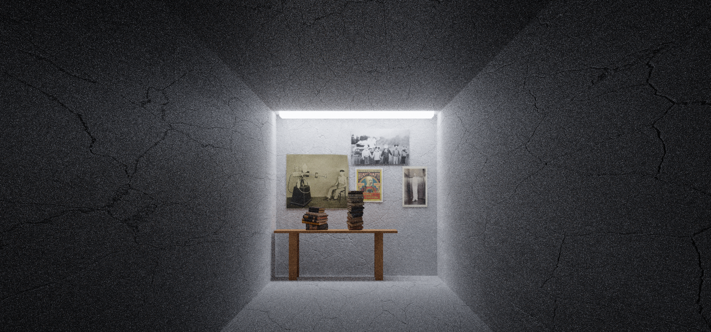

"House on the Hill"
3D environment with a house on a hill near a sunset.
Medium(s): Blender
Learn More
"Everyone I Love is Here"
Statues grouped together inside a house, with the middle statue fading away from her peers.
Medium(s): Blender, Blend Swap
Learn More

"The Room"
3D abandoned hallway with disturbing posters, books, and a table.
Medium(s): Blender
Learn More